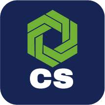

Solución propia Connexa · Para Oracle Field Service Cloud
Automatizá tus procesos OFSC
sin escribir código
Construí y ejecutá workflows programados sobre entidades de Oracle Field Service de forma visual y sencilla. Triggers, condiciones, acciones y notificaciones — todo sin una línea de código.
 Oracle OFSC
Oracle OFSC

By Connexa
Sin código

100% éxito
Tasa de ejecución
0 líneas
de código necesarias